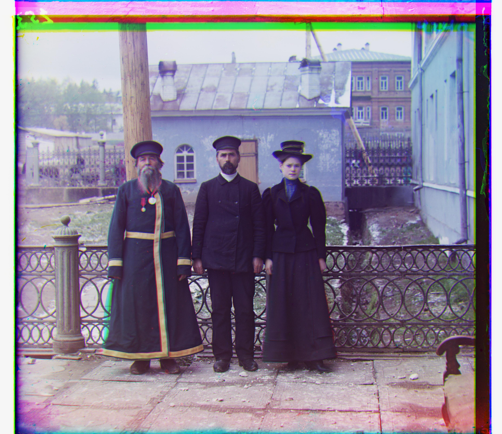

In this project, I applied various image processing techniques to align digitized Prokudin-Gorskii glass plate images into a single RGB color image. I first implemented a naive algorithm that exhaustively searched within a predefined displacement window, selecting the offsets that produced the best score based on Euclidean distance and Normalized Cross-Correlation (NCC) when aligning the R and G plates to the B plate. While effective, this method was slow for larger image files and often produced blurry alignments on these images. To address this, I implemented an image pyramid that represented the image at multiple resolutions and applied the same search procedure recursively, moving from the coarsest to the finest scale with smaller displacement windows. This approach produced better alignments for large images and reduced processing time for each image to under one minute.
Part 1: Simple Alignment
In this part, I implemented a naive algorithm to align the R and G plates with the B plate using both Euclidean distance and Normalized Cross-Correlation (NCC). The algorithm worked as follows: I performed an exhaustive search over a displacement window ranging from -15 to 15 in both the x and y directions, shifting the R and G plates relative to the B plate using np.roll(). For each displacement, I computed a score based on either Euclidean distance or NCC between the shifted plate and the B plate. To prevent the borders from introducing noise into the results, I cropped 10% from each side of the plates and only used the cropped regions when computing the scores. The displacement that produced the best score was selected as the optimal alignment—first between the G and B plates, and then between the R and B plates. Overall, NCC yielded more accurate alignments than Euclidean distance, especially for images with significant variations in brightness and contrast.
Below are several examples of images aligned using this method with NCC as the scoring metric.
Green X-Y Displacement: (5, 2)
Red X-Y Displacement: (12, 3)
Time Taken: 0.88 seconds
Green X-Y Displacement: (-3, 2)
Red X-Y Displacement: (3, 2)
Time Taken: 0.91 seconds
Green X-Y Displacement: (3, 3)
Red X-Y Displacement: (6, 3)
Time Taken: 0.93 seconds
For larger .tif files, the algorithm runs slowly and produces blurry alignments as seen below, motivating the need for optimization.
Green X-Y Displacement: (15, 4)
Red X-Y Displacement: (15, -14)
Time Taken: 156.35 seconds
Green X-Y Displacement: (15, 15)
Red X-Y Displacement: (15, -5)
Time Taken: 147.30 seconds
Green Displacement: (15, 8)
Red Displacement: (15, 15)
Time Taken: 137.51 seconds
Part 2: Pyramid Alignment
To speed up the runtime and improve alignment on larger image files, I implemented an image pyramid with multiple resolutions of the image, where each level was downsampled by a factor of 2. The pyramid included the original image as well as progressively downsampled versions for up to 5 levels. I then reduced the search window to a displacement range of -7 to 7 pixels in both the x and y directions. Using a recursive approach, I began alignment at the coarsest resolution with this smaller window. As the recursion moved to finer resolutions, I applied the same displacement window, but centered around the optimal displacement returned from the previous (coarser) level scaled appropriately to the new resolution. Similar to the naive approach, I evaluated alignments of the R and G plates with the B plate using both Euclidean distance and NCC, with the 10% crop added to each side of the plates before computing the scores.
Below are several examples of images aligned using this method with NCC as the scoring metric. Note that the Emir image still shows some slight misalignment due to differences in brightness across the channels.
Green X-Y Displacement: (5, 2)
Red X-Y Displacement: (12, 3)
Time Taken: 0.38 seconds
Green X-Y Displacement: (25, 4)
Red X-Y Displacement: (58, -4)
Time Taken: 43.03 seconds
Green X-Y Displacement: (49, 24)
Red X-Y Displacement: (104, 56)
Time Taken: 44.60 seconds
Green X-Y Displacement: (60, 17)
Red X-Y Displacement: (124, 13)
Time Taken: 43.81 seconds
Green X-Y Displacement: (41, 17)
Red X-Y Displacement: (89, 23)
Time Taken: 44.63 seconds
Green X-Y Displacement: (38, 21)
Red X-Y Displacement: (76, 35)
Time Taken: 44.53 seconds
Green X-Y Displacement: (-3, -2)
Red X-Y Displacement: (75, -9)
Time Taken: 45.11 seconds
Green X-Y Displacement: (41, -16)
Red X-Y Displacement: (93, -29)
Time Taken: 45.80 seconds
Green X-Y Displacement: (82, 11)
Red X-Y Displacement: (178, 13)
Time Taken: 44.83 seconds
Green X-Y Displacement: (-3, 2)
Red X-Y Displacement: (3, 2)
Time Taken: 0.38 seconds
Green X-Y Displacement: (79, 29)
Red X-Y Displacement: (176, 37)
Time Taken: 45.56 seconds
Green X-Y Displacement: (49, -6)
Red X-Y Displacement: (96, -25)
Time Taken: 45.21 seconds

Green X-Y Displacement: (53, 14)
Red X-Y Displacement: (112, 11)
Time Taken: 43.59 seconds
Green X-Y Displacement: (3, 3)
Red X-Y Displacement: (6, 3)
Time Taken: 0.38 seconds
Part 3: Pyramid Alignment on Extra Images
Below are some extra images from the collection aligned using the Pyramid method with NCC as the scoring metric: